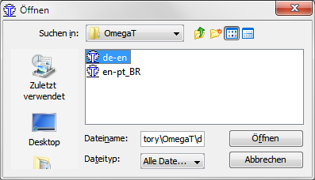

Translate JPhotoTagger into another language
JPhotoTagger's GUI texts are stored in plain text files
(Java properties files). For German, these files are maintained by the developers.
For other languages, users can add translations, which
will be delivered with JPhotoTagger. The application
Build creates a separate JAR file containing them (Localization.jar).
For the translation task, JPhotoTagger uses OmegaT. Even non computer affine persons should be able, to translate the texts in the OmegaT GUI.
Developers: Creating sources for OmegaT
If not already done, start OmegaT and create a project
for a specific translation in the directory Repository Root/OmegaT.
The project name contains the locale of the source language and separated through an underscore the locale of
the target language, e.g. en-pt_BR, where the source language is English and
the target language Brazilian Portuguese. OmegaT creates a directory of
that name (en-pt_BR) within the OmegatT directory and some
other subdirectories and project files. Save the project and quit OmegaT.
In the Ant file
Repository Root/DeveloperSupport/scripts/localize.xml,
the target create-omegat-sources creates up to date
OmegaT sources for all languages.
If you added a translation directory, update the Ant script
localize.xml through adding an antcall to the target
1-create-omegat-sources, e.g.
<antcall target="-copy-omegat-sources-from-localized">
<param name="src.locale" value="en"/>
<param name="target.locale" value="pt_BR"/>
</antcall>
The -copy-omegat-sources-from-localized target treats an
arbitrary language as source language and an arbitrary language as target language.
For German as source language and an arbitrary language as target language,
call the target -copy-omegat-sources-from-default.
A translator gets one of these OmegaT project subdirectories packed
into a ZIP file. The Ant target 1-create-omegat-sources creates these ZIP
files for each translation in the OmegaT directory named equal to the
translation directory, e.g. en-pt_BR.zip.
Translators: How to translate
Unzip the language specific OmegaT folder's ZIP file, sent from a developer
to you (see obove). Open it with OmegaT,
which is available for free at omegat.org.

Screenshot: OmegaT project open dialog, selected is the translation
project from German (de) into English (en)
You can read the 5 Minute manual; in short: Either go with ENTER from one text to the next (first translation) or with Cmd+U to the next untranslated. Replace the not highlighted source text with the correct translation. If done, save your work (Cmd+S or via the Project menu).

Screenshot: OmegaT editor. Text with green background
is in the source language, text in target language has yellow background.
To see the colors differentiating between source, target and untranslated
texts, check all menu items in View.
Recommended OmegaT Settings
- Options > Editing Behavior
- Allow the translation to be equal to source: Cecked, else trade marks etc., which are equal in every language, always will be treated as untranslated.
Editing rules
- Ampersands (&) in non HTML texts:
Following characters are selectors for menu items or buttons or jump marks
(Java Mnemonics): Alt+Character executes the menu item or
button command or moves the cursor into the text field or combo box or other GUI element
next to the label with the mnemonic.
You should use an appropriate ampersand position for your language. E.g. in a menu item, a
text may be "
&File", where Alt+F will invoke theFilemenu. A german translation of that is "&Datei", but the ampersand could be at another position, e.g. "Da&tei", where Alt+T invokes the file menu. In the same translation window, do not use a character twice, an accelarator invokes a unique command in the same program window or dialog. - Do not replace or modify HTML-Code within tags, translate only text outside the <> braces,
left the braces and their content.
E.g. a translation of "
This is <strong>important</strong>" may be "Dies ist <strong>wichtig</strong>". - Do not replace text with "special meaning" – usually such text looks strange
to you. Very common are curly brackets with
numbers or other content, e.g.
{0}. Leave the brackets and their contents as they are. These are markes and will be filled dynamically with e.g. numbers. The numbers may have different positions in different languages. Example:Deleted {0} files– the{0}will be replaced by the number of deleted files. An appropriate German translation is{0} Dateien gelöscht– the number is at the beginning of the message.
If all texts are translated, zip the folder and send it back to a JPhotoTagger developer. If you an OmegaT expert: The translation memory contains the relevant information.
Developers: Integrate translated texts
After extracting the ZIP contents to their original place, let OmegaT
create the target files (Project > Create target documents).
Then run the Ant target copy-omegat-translations. This target
copies all translated files from the OmegaT target folders into the
Localization project's source folder. Then rebuild
JPhotoTagger.
Author:
Write e-Mail
Status of this document: 2013-02-14